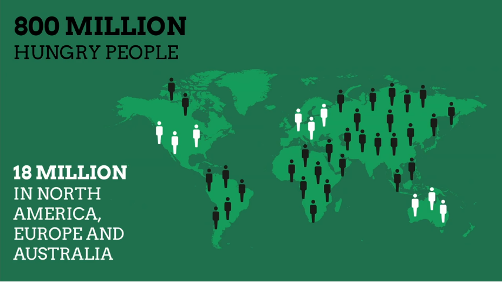
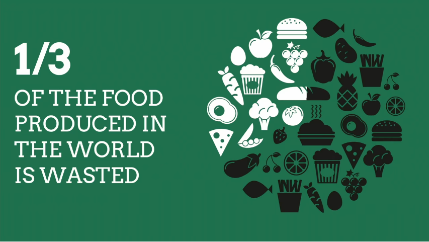
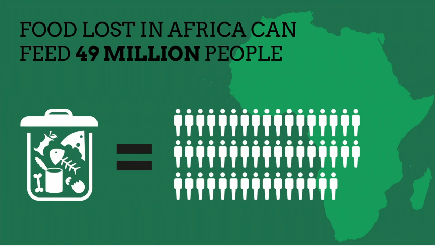
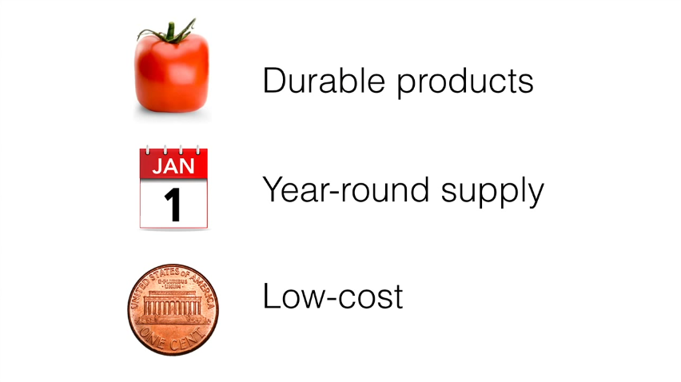
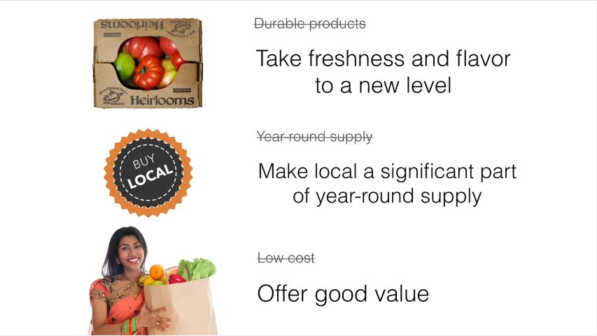

“When most people talk about global hunger, they think the problem is that there isn’t enough food in the world. The problem isn’t the lack of food. … Hunger is a logistics problem.”

“I’m suggesting that there’s another resource that corporations can bring to the table — and that resource is our people and their talent, experience and passion.”
— Kevin Etter is a 32-year veteran of UPS, currently on loan to Gavi, the Vaccine Alliance, a nonprofit that aims to increase global access to vaccines. He shares how he became a “corporate donation,” and why other companies should lend out their employees, too.

"There is enough food to feed the entire population"

The problem isn't a lack of food

In Kenya, a country where agriculture is the backbone of a very diverse and bustling economy, people still go hungry and food rots in the farms because the farmers don't have access to a proper supply chain to get their surplusses to the markets.
The current food system wasn't designed to be sustainable, or healthy, or fair to local farmers
It was designed for three other goals:

The solution lies in a new food system created through supply chains based on values:
Fair trade, healthy soils, and ecological farming, transparency, and resilient regional economies.
